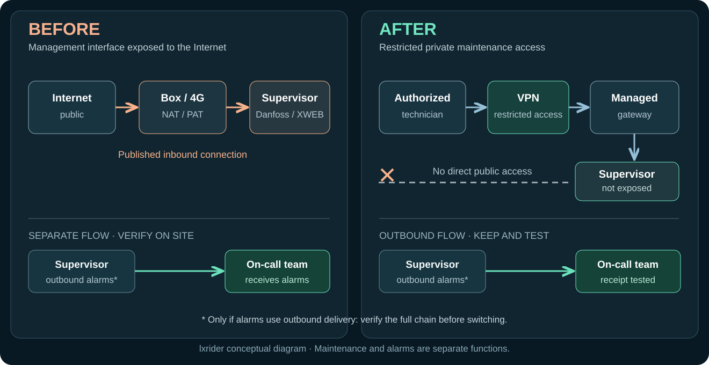
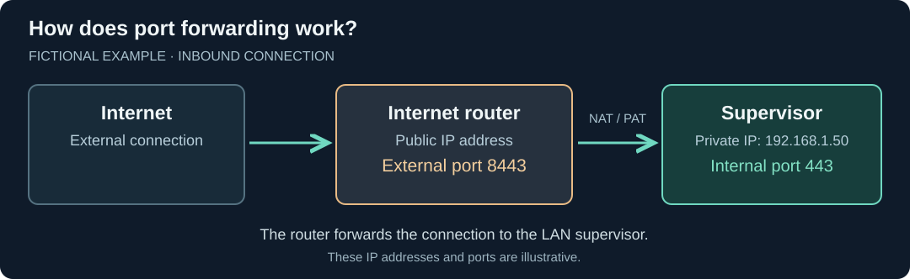
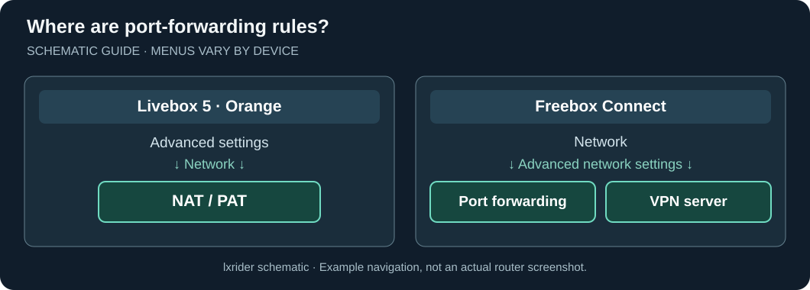
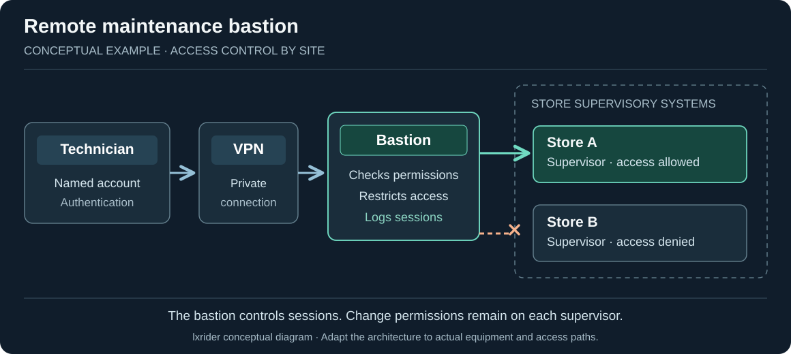

Securing Refrigeration Supervision: A Step-by-Step Practical Guide
Remote access to Danfoss and XWEB supervisory systems: identify exposed paths, migrate to a VPN or bastion, and preserve remote maintenance and alarms.
On this page
When a store calls about an alarm, the refrigeration technician needs to open its supervisory interface remotely. That is often how the technician understands the situation before travelling to the site.
Remote maintenance is part of everyday refrigeration service. Its access paths deserve as much attention as the supervisory systems themselves. A port-forwarding rule on an Internet router, a 4G router installed as a quick fix, a remotely accessible refrigeration workstation: access paths multiply as work is carried out and become harder to track.
Following the October 2026 incidents, CERT-FR recommends removing management interfaces exposed directly to the Internet. The practical question remains: how can direct public access be closed without losing remote maintenance and overnight alarms?
This guide addresses that question. Two related articles examine what an attacker could command using a compromised account and how to recover refrigeration after an incident. Here, the focus is on remote access to supervisory systems.
1. Remote access and Internet exposure: two different paths
Remote access meets a refrigeration technician's operational need. Internet exposure describes how a management interface becomes reachable from outside the site.
- Direct access: a connection from the Internet reaches the supervisory interface, often through a port-forwarding rule on the Internet router.
- Protected access: the technician first enters through a VPN or another managed access solution, then reaches only the authorized equipment.
A public login page remains exposed even when protected by a password. A VPN creates a private access path; network filtering then limits each technician to the necessary equipment.

Pay attention to the alarm path
Depending on the installation, the supervisory system may send alarms outward, the remote-monitoring platform may poll the site, or several mechanisms may coexist. The direction of each communication determines which network rules are needed.
Before changing a rule, ask the maintainer and on-call team: which system initiates each connection? The migration must preserve necessary communications. An agreed test with the on-call team should then confirm that alarms are received.
2. Identify the access paths that actually exist
The store's network diagram, if there is one, is a starting point. Technicians' habits may reveal more: “I connect through the Internet router,” “we use a SIM card,” or “I remote into the refrigeration PC.”
Identify all paths still used or left open:
- port-forwarding rules on the Internet router or firewall;
- a standalone 4G/5G router, perhaps installed by a service provider;
- IPv6 connectivity, where used;
- VPN, cloud access or remote-support software on the refrigeration workstation;
- legacy maintenance access, checked against current contracts and service providers.
The absence of NAT port forwarding on the main router does not rule out other paths, particularly cellular routers and remote-support platforms.
Understand what port forwarding does
Fictional example: an Internet router receives a connection on port 8443 and forwards it to the supervisory system at 192.168.1.50 on port 443. The external and internal ports need not be the same.
This rule establishes a possible path to the supervisory system. Whether the service is reachable and whether it has been accessed in the past are two separate questions.

The person responsible for the router records the destination, ports, protocol and purpose of each rule. Document first; make changes during the coordinated migration.

A simple check on your own installation
If you already know the address normally used by the refrigeration technician and have the necessary authorization:
- On a phone, disable Wi-Fi and any VPN, then try the usual maintenance address over the mobile connection.
- If the supervisory system's management page loads directly, its Web interface is reachable from the Internet.
- If the page cannot be reached at that address, this does not prove there is no exposure: continue inventorying other possible paths (other ports and services, 4G, IPv6 and remote-support tools).
This check concerns the established maintenance address and an authorized scope. To identify other addresses or test other devices, involve the network administrator and maintenance provider.
Who controls remote-maintenance access?
A store may belong to a retail group, have been fitted out by an integrator, and use a remote connection installed by the refrigeration contractor. The VPN may be administered by corporate IT, while a 4G router or maintenance platform belongs to a service provider.
Four questions should be answered for each access path:
- Who authorizes it? Who allows a refrigeration technician or provider to intervene at the store?
- Who administers it? Who creates accounts, grants access and can revoke it?
- Where is it administered? On the store router, a 4G router, the retailer's bastion, or a platform hosted by a provider?
- With what authority? Which stores and equipment can the technician reach? Who approves expanded rights?
Changing maintenance providers is a revealing test: who can find the former provider's access paths, and who has the ability to close them?
3. Prepare the replacement before touching the router
A port-forwarding rule can be deleted in a few clicks. Recovering a technician's access during an overnight emergency may take much longer.
Before the change, assemble three pieces of information:
- Remote maintenance: how does the refrigeration technician connect today? From a PC, through a VPN or portal, or via remote control of the refrigeration workstation?
- Alarms: who receives them, by which path, and how will reception be checked afterwards?
- Fallback: what backup option exists if the new access fails? Who can be reached overnight?
Also identify the supervisory-system model and its connection: store Internet router, cellular router or another path. If a contract includes remote monitoring, the relevant service provider must be involved in the migration.
| Participant | What they must confirm |
|---|---|
| Store operator | Approval for the intervention, maintenance window and fallback arrangements. |
| Network / IT lead | New access path, rule changes and closure of the old path. |
| Refrigeration technician | Working remote access and availability of required functions. |
| On-call team / monitoring provider | Alarm reception and a known fallback procedure. |
Tests must be agreed with the participants: access verification, alarm receipt and preservation of refrigeration operation.
4. Secure remote maintenance without losing remote access
A simple, maintained solution restricted to the right equipment makes remote maintenance and future repairs easier. Every added component must have an owner.
VPN, gateway and bastion: different roles
A VPN provides a private path to the site. A gateway may provide that connection. A bastion is useful for organizing and recording maintenance sessions, especially across multiple stores or service providers. A private path alone is not sufficient: the access administrator must restrict permitted routes, destinations and ports, and provide a way to revoke authorizations.
| Situation | Option to examine | What to check |
|---|---|---|
| The store already has a corporate VPN | Reuse it with access restricted to refrigeration | Who connects, and which devices are reachable? |
| The Internet router offers a suitable VPN server | Router VPN, such as WireGuard on certain Freebox models | Accounts, updates and access filtering |
| The site needs private access | Managed VPN router or gateway | Who will maintain and troubleshoot it? |
| Remote maintenance uses a 4G/5G router | VPN or remote-access solution compatible with the link | Connectivity, fallback and the alarm path |
| Multiple stores or refrigeration maintenance companies | Private access supplemented, where necessary, by a bastion | Site-specific rights, sessions and emergency access |
The VPN provides the private path; the bastion governs maintenance sessions. Depending on the product and supported protocols, a bastion can require named accounts, restrict destinations and retain connection logs. Check that direct access paths cannot bypass it, and protect the accounts that administer it. Command permissions still need to be checked on every supervisory system.
Separate the refrigeration network and control access
Remote maintenance should connect to a network zone dedicated to refrigeration equipment, separated wherever possible from office workstations, guest Wi-Fi and other store systems. The goal is to limit possible communication if a maintenance workstation or account is compromised.
A VLAN can provide logical separation on managed infrastructure; physical separation is another option. A VLAN alone does not enforce filtering: if the router allows unrestricted inter-network traffic, a compromised device may still reach the other zone. The network administrator must identify necessary communications and restrict them using suitable firewall or filtering rules, including traffic arriving from the VPN.
Before changing this architecture, inventory and test essential traffic: communications between supervision and controllers, alarms to the on-call team, multi-site monitoring and maintainer access. Poorly prepared isolation could interrupt an alarm or prevent troubleshooting without necessarily stopping local control. Which functions must be preserved depends on the installed equipment.
On a small installation behind an Internet router that cannot enforce this filtering, do not create a merely symbolic VLAN. First remove direct exposure, secure identities and have an appropriate managed router or firewall assessed for genuine network segmentation. The design and configuration are the network administrator's responsibility, in coordination with the refrigeration technician.
Example involving two stores
The same refrigeration contractor maintains stores A and B. During work on store A, the technician's session can be restricted to that store alone. A properly configured bastion can restrict the session to A and log the connection.

However, the bastion itself becomes a sensitive access point. It must be updated and its administration protected, with a fallback option in case of failure. ANSSI guidance on provider access to building-management systems informs this choice. The architecture must reflect each store's constraints.
Temporary protection before deploying a VPN
The network administrator may temporarily filter incoming Internet connections to allow only the service provider's known public IP addresses, if the equipment supports it. CERT-FR presents this as a temporary measure: the supervisory system remains reachable from those addresses.
Such temporary protection needs an owner, a deadline for moving to VPN access and a test of alarm reception.
Review maintenance accounts
Does a former provider still use a shared login? Is a default account still enabled? Review these with the maintainer. Assign named accounts and minimum necessary privileges. Enable multi-factor authentication (MFA) at a compatible remote-entry point (VPN, bastion or access portal). If an older supervisory system does not support MFA, protect access upstream rather than assuming it has a feature it lacks. Plan the revocation of former technicians' accounts, protection of supervisory administrator accounts and suitable access logging.
Closing public ports and managing accounts are complementary protections. A VPN also reduces the exposure of an out-of-support supervisory system. Copeland announced the end of software updates for XWEB EVO on 16 March 2026: immediate access protection should therefore be accompanied by a replacement plan.
Migrate in the right order
- Deploy and test the new access, including MFA and network restrictions, with the refrigeration technician; retain any fallback approved as necessary.
- Check remote maintenance and the complete alarm path with the on-call team.
- Have the direct public access removed by the authorized person, with the operator's approval.
- Test again, check other paths (4G, IPv6 and cloud access), and document the fallback. A fallback must not automatically re-expose the interface on the Internet: any temporary exception must be approved, limited and time-bound.
5. Verify everything after the intervention
From the Internet, the supervisory management interface must no longer be directly reachable, including via the former published path. The public IP address may still serve a protected VPN. This check must be accompanied by an assessment of other identified paths and a complete remote-maintenance test.
Checks to close out together
- Known access paths have been inventoried: Internet router, 4G/5G, IPv6, refrigeration PC, platforms and service providers.
- The new VPN or private access works for an authorized technician; attempts by out-of-scope accounts are blocked.
- MFA on a compatible VPN, bastion or access portal has been tested; named accounts and revocation of former access have been checked.
- Segmentation of the refrigeration zone (filtered VLAN or another suitable control) has been reviewed; permitted and prohibited traffic has been tested with the network administrator.
- The technician can reach only the equipment required for the intervention.
- If a bastion is used, site-specific permissions, logging and fallback have been tested.
- Identified direct paths have been closed; the network team has checked other possible paths.
- An authorized test alarm has been received and acknowledged by the on-call team.
- The refrigeration technician confirms that the supervisory system and necessary remote-maintenance functions remain reachable.
- For every access path, the people who authorize, administer and revoke rights are identified, including at service providers.
- Everyone knows who maintains the solution, who troubleshoots it and whom to call outside business hours.
This guide covers preventive access security. If compromise is suspected, closing a port-forwarding rule is not enough to declare the installation trustworthy. Preserve observations, have a qualified refrigeration professional check actual parameters and process conditions, and coordinate the response in line with CERT-FR and manufacturer guidance; post-incident recovery is a separate topic.
Success must be verified on site: the technician can work remotely through controlled access, the on-call team receives alarms, and management interfaces remain behind the intended safeguards.
Sources and documentation
- CERT-FR — CERTFR-2026-ALE-012: incident affecting remote refrigeration controllers (16 October 2026 version).
- Copeland / Dixell France — Recommendations for the secure use of XWEB supervisory systems (French) (14 October 2026).
- Danfoss — AK-SM 800A User Guide (June 2026, especially pp. 30 and 35; 800A only).
- Copeland / Dixell — XWEB EVO 5.6.0 manual and XWEB PRO 1.2 manual: distinct versions.
- ANSSI — Building-management-system security guidance (2026, French) and Secure Administration of Information Systems, §13.1 “Using a Bastion” (French).
- NIST — SP 800-82 Rev. 3, Guide to Operational Technology (OT) Security (September 2023, §6.2.1.3 on network segmentation and isolation).
- Orange — Livebox 5, NAT/PAT (French) and Free — advanced network settings (French).
Scope: a practical guide for personnel authorized to work on refrigeration supervisory systems. Access examples and diagrams are conceptual and must be checked against the site's actual equipment, connections and contracts.
Version 1.5 — maintenance access controls, 3 November 2026. © 2026 lxrider — All rights reserved.